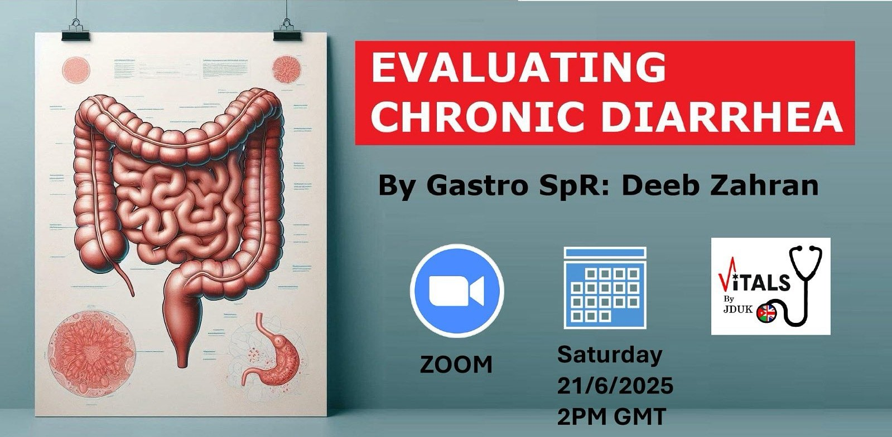
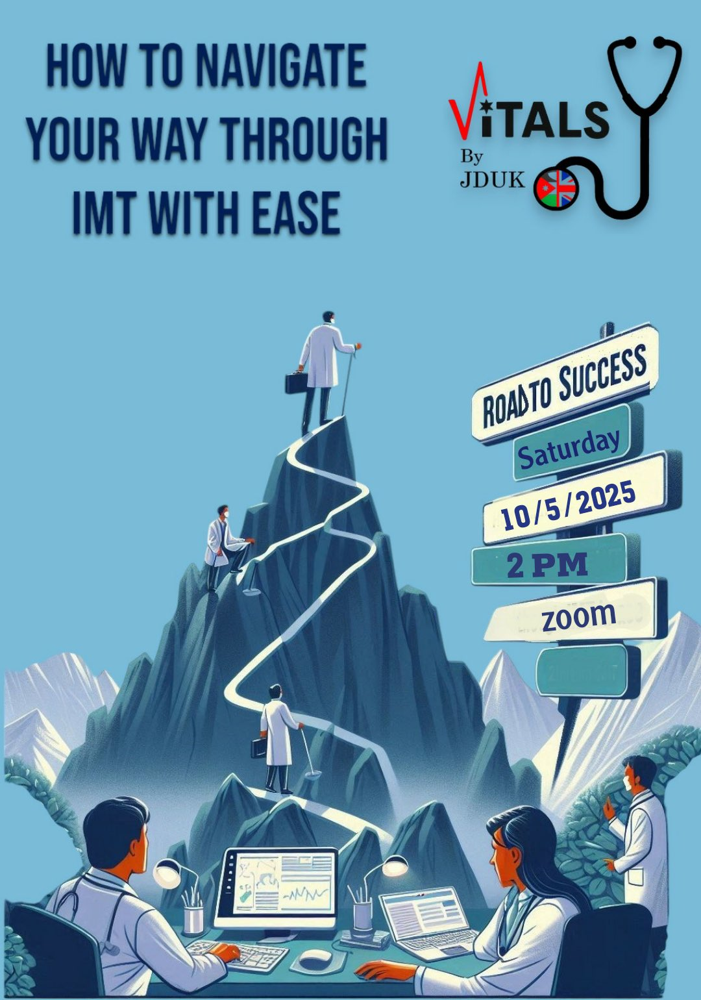

News & Activities

Chronic Diarrhea: What Are You Missing?
Join Gastro SpR Dr. Deeb Zahran for a session about diagnostic frameworks and evidence based management.
📍 Zoom
🗓️ Sat, June 21 | 2 PM GMT
📜 Certificates provided
Link

Starting Internal Medicine training can be a steep learning curve — and not just medically. Join us for the session "Road to success: How to navigate your way through IMT with ease".
🕐 Time: 2PM
🗓️ Date: Saturday May 10th, 2025
📍 Venue: Zoom
Link
We are thrilled to invite medical students and doctors interested in pursuing speciality training in the UK to join us for our “Become A Trainee 2025” Conference.
🕐 Time: 09:00 - 16:00 (GMT)
🗓️ Date: 23/2/2025
📍 Venue: Zoom
Registration Link
It is our pleasure to invite you to the Jordanian Doctors in the UK Association (JDUK) Second Annual Scientific Conference, taking place online on August 25th & 26th, 2024.
🕐 Time: 09:00 - 16:00 (GMT)
🗓️ Date: 23/2/2025
Registration Link